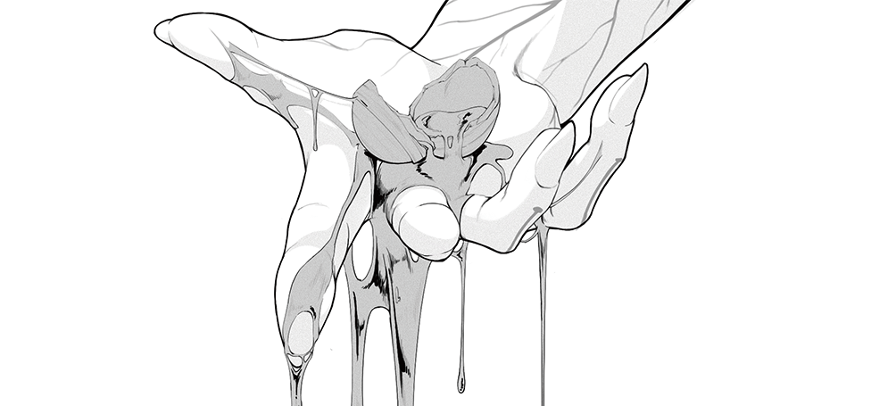
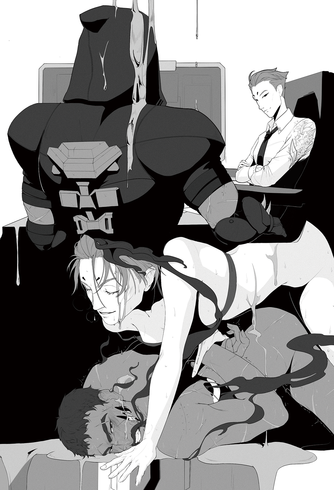
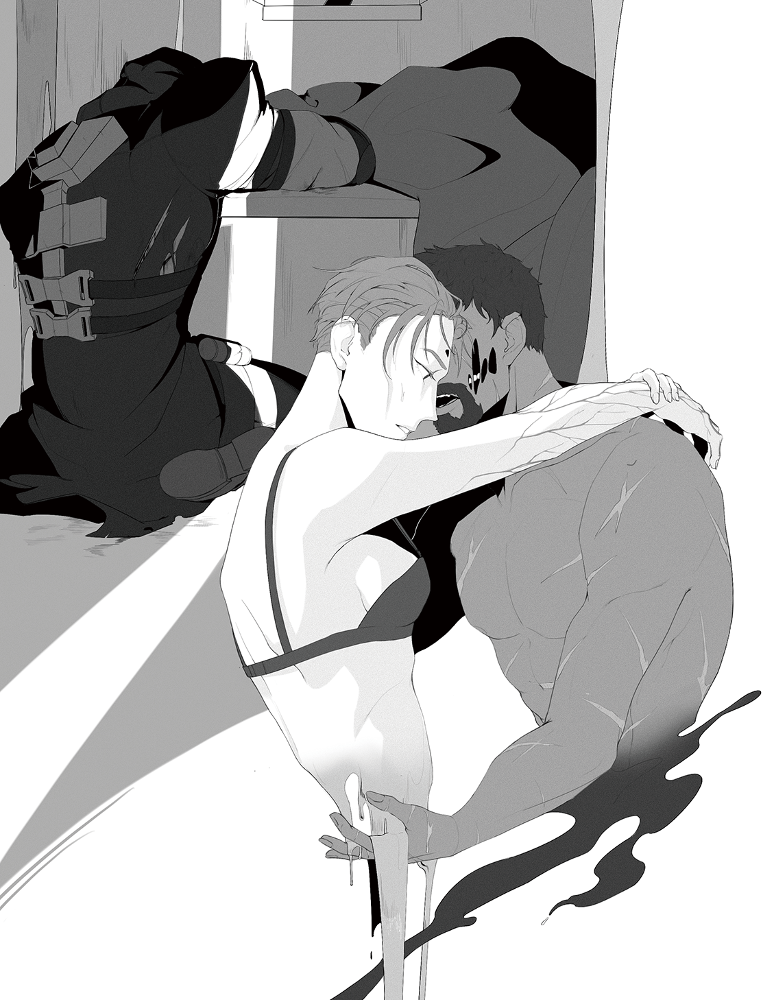
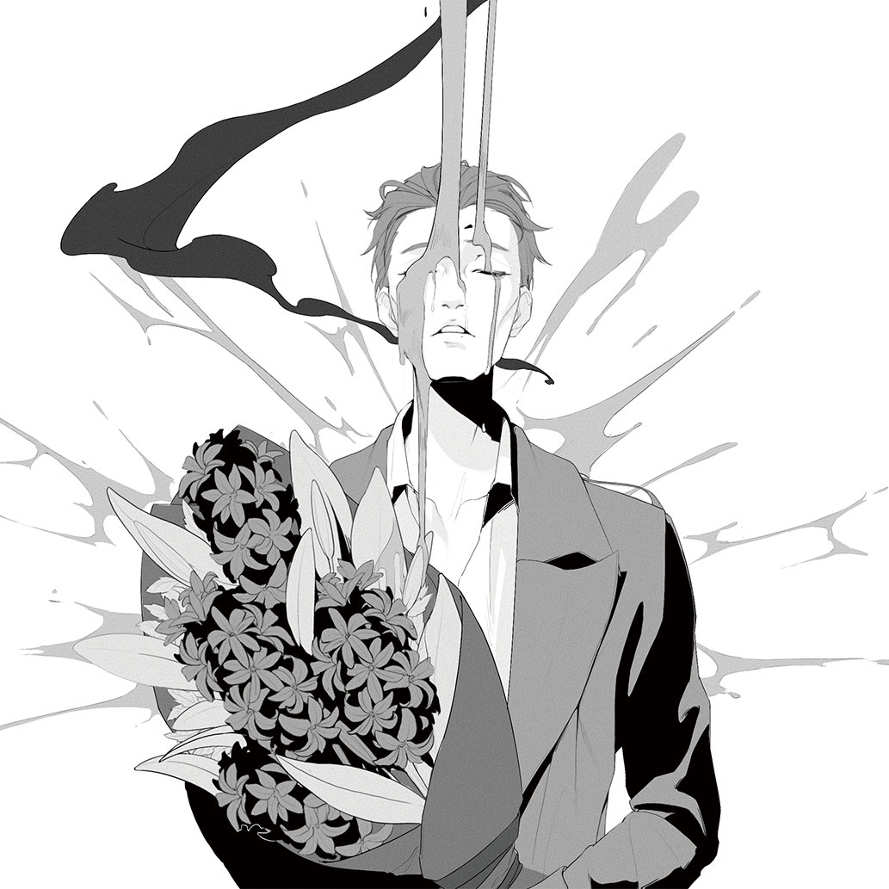

《锈味硬糖》内页公开
非常怪非常不健康的双a 夹杂了各种各样的私设
含有互攻、疼痛依恋、物理损伤、角色死亡等过敏原，请根据自身体质酌情食用。未成年人禁用。
食用过程中如出现血压升高、头晕头痛等不良反应，请尽快停止食用。
简单解释一下核心私设：ALPHA无论男女都无法被标记，但当发生标记行为的双方均为ALPHA时，被标记者会因自身信息素与外来信息素相互作用而产生从腺体逐渐扩散至全身的细密疼痛，该现象也被称为假性标记。

第一章
“有事吗？”在看到联系人姓名之前，莫伊拉就已经猜到了电话那头的身份。
毕竟除了从以前就知晓她作息的某人，也不会有别人在这个点联系她了。
“呃，你能过来一趟吗？”经由电波传送的声音有些失真，“我信息素失控了。”
她停住手中的笔。
“……有别的症状吗？”得到对方干脆的否定后，莫伊拉用空出的左手拉开抽屉，将其中一只试剂盒拎在手中并顺便抓起一旁的外套。
“五分钟后见。”
“你有没有想过，如果我不在会怎么样？”莫伊拉准时敲开对方的房间。就算她事先有所准备，也在闻到屋里浓郁到令人窒息的咖啡味时不由得加快了心跳。她迅速带上了门，试图借由闲聊分散自己的注意力。
“总会有办法的。”加布里尔拉过椅子坐下，配合地伸出左臂，平静的神情证实了这次失控的确没有引发别的后果。“你能知道原因吗？”
“你这里的条件可不够我做检查，”她一边将药剂推入血管一边说道，“物理损伤、精神压力，都有可能。”她尽量让自己不去想象某些画面，但当她将针头抽出时，随之渗出的血滴依旧让她下意识加大了手上的力度。
“怎么？”感觉到前臂上加重的压力，加布里尔不禁出声问道。
“抱歉。”她摇了摇头，将剩余的抑制剂放进一旁的矮柜，而后撑着柜子站起。药剂开始起效，屋内的信息素没有进一步变浓的迹象。虽说如此，在通风系统已经开到最大功率的情况下，残留的气味一时半会仍无法散去。她俯视着加布里尔，只觉得太阳穴的胀痛愈发剧烈。
“所以，你要怎么感谢我？”她无法抗拒那个埋藏在内心深处的想法的诱惑，尽管她并不确定它会导向何种结果。凭借尚未崩散的理性，她唯一能确定的是，无论她做了什么，他们的合作关系都将继续。
那也就足够了。她本来也没有期待收获对等的情感。
“你想怎样？”加布里尔干笑几声，抬起头盯着她，像是在思考这句玩笑中隐含的意义。
而她只是俯下身，以行动代替话语作为回答。
一切发生的很突然。
他没有任何可以用来证明事情发生的证据。他身旁是空的，就连脱下的衣物都被整齐地叠放在床头，仿佛是他亲自所为。他嗅不到一点异样的气味，通风系统也被调回了正常档位。甚至除了头脑有些昏沉以外，他的身体没有留下任何痕迹。但他并不需要花费多大力气就能清楚地回忆起昨晚发生的事。她的触碰，她的言语，她的温度，她带着薄荷香气的吐息，仅仅是想起这些就让他的肌肉紧绷战栗。
加布里尔抓起手边的衣服胡乱套上，起身走到厨房，将手中的冰水一饮而尽。冰冷的液体淌过喉间，他长出一口气，几次深呼吸后才暂且平复逐渐加快的心跳。
他，他们，一定是疯了。
“喔哦，你好像遇到了点事啊？”例行会议前，黑影一反常态地提早半个小时到达了会场，而其结果就是让加布里尔的脚步在踏进房间的前一刻出现不合时宜的停顿。他低头瞟了眼对方，径直坐到对面，并不想回答她的问题。
但黑影已对这种情况习以为常，收起手上的资料便直接翻过桌子坐到他身旁，一边支着头，一边用手肘捅捅他：“告诉我呗，说不定我能给你点建议啥的？”加布里尔依旧没有搭话，对她的提议无动于衷。见没有得到想要的反应，紫发的年轻Beta有些懊恼地“嘁”了一声，却没放弃试探的念头。
“让我猜猜——好吧，你的人际关系实在少得可怜而就我所知你最近也没跑到别的地方所以——”似乎是因为一下子说了太多的话，又或者只是想吊吊听众的胃口，黑影来了个大喘气，“我想不出来这事除了博士还能和谁有关。”说完，她还打了个响指，俨然一副胸有成竹的样子。
显然她一开始只是在明知故问。加布里尔双手交叉抱在身前，扭头看向身侧，“所以呢？”无论何种回答都会引出更多的信息，而他选择最保险的一种。终于意识到不管使用什么方式都不能让眼前这个人开口后，黑影兴致缺缺地趴到桌上，转而往嘴里丢了什么。“真无聊，你跟别人聊天也这样吗？”她的声音听上去有些含混不清。
“我们不聊天。”他只是干巴巴地回了一句。事实上，他们的确不曾有过能被称为聊天的谈话，除非那天晚上的那些也算——
打住，他不能再想下去了。
得到已有信息并不是什么值得庆祝的事，黑影耸了耸肩，转而从口袋里掏出一把糖果放在加布里尔面前。
他在面具下皱起眉头。“这是什么？”
“只是糖，就像你看到的那样，”她指指嘴巴，“没加料。”
尽管对方的强调听上去很可疑，但加布里尔选择把那当作刻意为之的把戏。他将鲜红的球形硬糖收进口袋，剥开其中一颗的糖纸放入口中，随后咬碎。坚硬的糖壳同臼齿碰撞发出刺耳的摩擦声，其间流出的甜腻液体让他一时有点后悔接过兜里的那堆东西。而在他将碎片囫囵吞下时，会议室终于迎来了第三位客人。莫伊拉推开门，手上还抱着她的平板。她的视线在黑影身上停留了两秒，随后转回她的腕表，脸上少见地露出几分困惑。但她终究没说什么，只是沉默地拉开椅子，坐到了加布里尔的另一侧。
但那点细小的表情变化始终不能逃过黑影的眼睛，她当即起身表达自己的不满，而被抗议的那一方只是打开手上的资料开始翻阅，待原告陈述完毕后才回上一两句作为聊胜于无的自辩。这场临时发起的辩论也不需要裁判的参与，直到房门被再度打开时便止了声息。终于能享受片刻的清静，加布里尔坐在两人中间，无声地叹了口气。
会议开始时，他不动声色地将视线转移到莫伊拉身上。她正在平板上勾画着什么，挺括的衬衣领口略微敞开，将她的脖颈衬得更为修长。黑色线条勾勒出的风信子在左肩盛开，只是花瓣因褶皱蜷曲着。他不能分辨对方的座位选择是有意还是无心，但无论哪种都让他感到微妙的烦躁，只得寄希望于会议能快点结束。如他所愿，行动的内容简单明了。无需多言，众人确认了自己的任务后便四散而去，只有黑影在离开的时候朝他眨了眨眼，而他选择忽视对方的暗示。
现在房间里只剩下他们两个了。
“咳，”他咳嗽一声，试图引起对方的注意，却在对方扭头盯着他的瞬间遗忘了自己之前想好的台词。该死，尽管他不想承认，但他实在无法反驳黑影的论断。也许唯一值得庆幸的是他的面具在某种意义上帮他避免了更为尴尬的情况。
莫伊拉关掉手里的屏幕，转身看着他，像是在等待他的后文。
“你怎么还不走？”开口的一瞬间他就后悔了。
也许刚才直接出门是一个更好的选择。
他没有正视对方的脸，但莫伊拉语气里不加掩饰的笑意让他大概能猜到她的表情。“我觉得你有话要说，不是吗？”
他默认了对方的猜想。他本打算问些关于那天晚上的事，却在临说出口时意识到这种问题没有任何提出的必要。那是一场发生在无影灯下的意外，案情十分明朗，每一步都被照得清清楚楚，没有一点可供模糊的余地。
唯独事情的动机现在看来只剩下匪夷所思。
“所以……为什么？”加布里尔迟疑片刻，终究还是选择向当事人进行求证。他知道，在事实面前，一切不合理都会拥有一个属于它的理由，但只有这个问题他始终无法给自己一个足以接受的答案。
“因为我想看到你的反应，”她听上去就像在谈论某道喜爱的菜品。“结果——”莫伊拉歪着头，似乎在回忆什么，“真是惊人。”
“就这样？”这个理由过于浅显直接，导致他直接没听见对方的后半句话。而在得到肯定答复后，他竟不知该作何回应。
这个回答实在是出乎他的意料。
所幸对方率先打破了沉默，让他暂时将注意力转移到了其他问题上。“看上去你已经没事了？”莫伊拉指了指自己的后颈示意道。
他点点头，那次失控的结束和它的出现一样突然，而他至今也不知道发生的原因。“也许下次我需要一些额外检查。”尽管现在一切正常，但他仍然希望减少自己身上的不可控因素。
减少他身上那些不太正常的因素。
莫伊拉同意了他的建议，在平板上记下几个词句后一副准备起身的模样。“还有什么问题吗？”
“够了。”没什么值得继续提问的，他随对方一同起身走出房间，在即将分道扬镳时停下脚步。对方的声音从他身后稍远的位置传来。
“我很期待下次的见面。”
第二章
随后的几个月，加布里尔身上再没发生任何意外事件，而那次失控的原因最终也没有得到查明，只能归结于他那偶尔不稳定的身体状况。他本以为莫伊拉会因这种结果而感到挫败，却没想到对方接受事实的速度比他还要更快。一切事物都具有随机性，而我并不是那个上帝。她只是这么说着，将报告添进厚厚的文件夹里。既是如此，他也只得耸耸肩，接受这个不了了之的事实。
但他没想到这种经历还会有第二次。
这么说并不完全准确。事实上，这次重演并没有出乎他的意料。
这次他甚至不能拿意外当借口。他的身体没有出现任何问题，他的神志不能更加清醒。他为什么要这么做？他答不上来，但这个问题的隐含意义让他开始无法理解自己。
他居然在期待这种事的发生。
而此时此刻，他正跪在自己的床上，感受对方骨骼分明的指节缓缓没入他的体内。他的身体因对方微小的动作而颤抖得愈加剧烈，让他下意识弓起背以缓解自己的生理反应。他确定对方一定在享受这个过程。她刻意在掠过敏感点时放慢的速度，以及在他蜷缩身体时沿着那些伤疤落下的蜻蜓点水般的吻，他甚至能想象对方会以何种表情审视现在的自己。
“哈，这就是你想看到的……是吗？”他在喘息的间隙尽力挤出完整的词句，但其中的某些发音还是变了调。
“完全正确。”她俯下身回答道，上挑的尾音让他忍不住再讽刺几句，但像是为了强调这种认可一般，她一边说着，一边有意加重了手上的力度。过电般的刺激让他只能咬紧牙关，破碎的呻吟伴随着他的呼吸从缝隙间流出，反而让他听上去更狼狈了一点。他嗅到莫伊拉若有若无的信息素，而这显然也是她的恶趣味之一。他能感觉到Alpha的本能所引发的微弱冲动，但现在的情况却让他无从排解，只能转为一种难以言明的躁动。当她将沾满滑腻液体的手指抽出，转而进入正题时，他终于不再有多余的精力来抑制信息素的释放。被异物进入的体验并没有比第一次好上多少，他试图依靠深呼吸阻止自己发出某些声音，却只是让吸气声在中途以不可思议的方式转为另一种呻吟。他听见自己的声音如同年少时在杂物间里找到的老旧卡带般断断续续，就连沙哑的音质都如出一辙，仿佛在播放时卡了壳却找不到暂停的开关，只能不断重复那些不成词句的单音。在神经递质的引导下，他的身体比理性先一步习惯了这个过程。他的下体正因对方的抽插分泌出更多的液体，让这一过程变得更为顺畅。似乎是闻到了他的信息素，对方的动作短暂停顿了片刻，而后变得更具有针对性与攻击性。他用余光瞟见门缝中透出的白色光晕，隐约的疼痛和不断累加的快感让他的一部分逐渐抽离身体，同时引出某种不曾感受过的空虚。
恍惚间，当他试图思考那种莫名的空虚从何而来时，莫伊拉又一次俯近他的后背，愈发浓烈的薄荷气息打断了他本就纷乱的思绪，让那种躁动被重新唤起。他的手中空无一物，只能抓住身下苍白的被单聊以缓解。但这并未持续多久，下一刻，后颈传来的刺痛如同突然绷紧的弦将他从游离的边缘拽回，某种不属于他的物质渗入他的腺体，同他的信息素纠缠在一起。躁热混杂着针刺般的疼痛从一点开始扩散，仿佛成群的虫豸噬咬着他的肌肉与骨骼。
“操……莫伊拉你个该死的——呃！”他下意识地蜷起身躯试图缓解假性标记带来的疼痛，不由得将手中的布料抓得更紧，在平整的表面留下杂乱交错的褶皱。他不止一次经历过比这更为煎熬的痛苦，但从未有过哪一次能让他如此无所适从。他喘息着，呻吟着，却无法缓解这种陌生的不适感。他已经闻不到自己亦或是对方的信息素了，只是身体自发的反应让他明白它就在周围的空气中弥漫。
而此时此刻，当对方在他的后颈刻上血色的咬痕，当异样的疼痛逐渐遍布他身体的每一处时，加布里尔突然想起那颗糖果被他咬碎时在口腔里留下的触感，以及其中流出的粘稠液体的余味。黏腻的糖浆从支离破碎的糖壳间渗出，在舌尖留下难以抹去的味觉记忆，锋利的碎片划过食道，刻下同样鲜红的印记。
暗红色的液体从嘴角淌下，他尝到如同铁锈一般腐朽的味道。
伴随着他紊乱的呼吸，口中吐出的几缕黑雾让他的视野里的光点暗淡了些许。刺骨的疼痛让他几近窒息，一股腥甜在他口中扩散。莫伊拉并未对他的咒骂作出回应，只是将鼻尖靠在他的颈后，不时舔舐着刚刚由她造成的伤口，让他借以支撑的手臂几乎使不上力。他似乎张嘴说了什么，却已无暇理解那些发音的含义，只能听见自己含糊不清的闷声。而与此同时，他的生理反应似乎并未因为疼痛而消退半分，反而有着愈演愈烈的迹象。
还能比这更糟吗。在他觉得自己开始逐渐适应身体的不适时，对方突然的深入让他的自我调整前功尽弃。生理的快感裹挟着细密的刺痛将他的感官包裹，他无法克制地颤抖着，听见自己带着鼻音的呜咽，在对方的抽送与抚摸中结束了一切。一阵酥麻顺着脊柱一路往上刺激着他的神经，他竟在迷蒙中尝到了空虚的来源。
而在意识到的一瞬间，残存的理智让他突然清醒。那个刹那的想法让他颤栗，如同溺水的人吸入久违的新鲜空气。
但他无从否认，那就是这种戏码再度上演的真正原因。
锈迹斑斑的猩红硬糖在他的口中化开，多么荒唐，他居然从疼痛中觉出带着快意的满足感。
余热还未褪去，这次对方不再有更进一步的行动，只是缓缓从他体内退出，细小的摩擦与挤压让他不自觉收紧肌肉。他的意识仍旧沉浸在方才那个如同火花般闪现的想法中，以至于他甚至没有意识到莫伊拉已经躺在了他的身侧，撑着头盯着他。
“在想什么？”她背着光，只有轮廓被染上了模糊的晕影。
“什么也没有。”他转过身，躺倒在已经乱得不成样子的被单上，盯着天花板上的光斑，感受着潮水退去后没过全身的疲惫。她的指尖抚过他的额角，耳廓，下颌，最终停在他心脏的位置。
而他只是闭上了眼。

第三章
这种关系藉由一种诡异的默契维持着。
他们的见面没有固定的时间地点，每次似乎都是一时兴起，却又在最恰好的时机。加布里尔不曾主动提出，但也从未拒绝她的邀约。尽管他未曾对任何人提起自己的异样，但她总是会在众人安睡的午夜叩开他的房门，用最轻柔的触碰唤起他内心深处的那点渴望。
这不正常。他试图探寻这种焦渴的源头，甚至为此付出了一些代价，却一无所获。当子弹贯穿他的躯体，当他听见自己某处骨骼的碎裂声，当他看见黑色的烟雾混杂着粘稠的血液从伤口滴落，在地上留下惹眼的污迹时，那点欲望就像一只蛰伏在暗处的毒蝎，观察着眼前的诱饵而无动于衷。至少这证明他的工作不会受到影响，也许能算上个好消息。在生与死的边缘，仅仅是一瞬间的犹豫都可能让他跨过那条边境线。以前如此，而现在，更不会有人在背后看着他。
但当他们肌肤相亲时，一切都变了。他的血液躁动着，将隐秘的渴求送往身体的每个角落。事实上，并非每一次他的期望都能被满足。相反，对方常常只是用微凉的指尖在他身上留下薄荷味的细小划痕，而那并不足以填补他所缺失的东西。有时，在一切结束后，她甚至会在他身旁躺下，用略带寒意的手握住他的，在并不紧密的十指交叠中睡去，仿佛这只是一场再普通不过的性爱。他找不出一个合适的词语来定义他们的关系，但他也不曾求证过对方的答案。这不正常，他应该尽早抽身。可当他独身一人躺在床上，于死寂中无可避免地回忆起那份同本能相悖的，由她给予的，夹杂着快感的痛楚时，他却不得不承认，自己或许已经食髓知味。
但加布里尔知道，这一切终究会迎来一个终点。他跌跌撞撞地走进房间，拉开柜门，用仅剩的气力将药剂刺破皮肤注入血管，而后便半跪在地上，再没有多余的力气直起身子。红到发黑的血迹在苍白的灯光下显得格外刺目，舌根泛起的苦涩也在告诉他情况有多么糟糕。空荡的房间里只有他一人粗重的喘息声，他脱下兜帽，将颤抖的手覆上后颈，温热的液体从他的指间渗出，连带着撕裂一般的疼痛，而这甚至还不是最严重的一处。在药物的作用下，他的伤口逐渐愈合，但全身近乎散架的钝痛也愈加强烈。他挣扎着站起身，在再次失力前回到了卧室。抑制剂成功阻止了信息素的进一步失控，风扇单调的低鸣也让他暂时感到安心。他伏在床边，强迫自己在痛苦中保持清醒。
事情的结果略微出乎他的意料，但好在形势的演变已走上他预想中的轨道。他并未将自己今夜的行动计划告知莫伊拉，尽管他确信有对方的帮助自己现在会好受得多。至少不会陷入现在这种站都站不起来的窘境，他自嘲地想着。在疼痛中，他想到那个为自己预留的结局，下意识将储存在脑海中的所有与对方有关的记忆一字排开，如同整理文件般一一审视。直到此时，他才第一次正视那个影子般无法摆脱的缥缈念想。而后，加布里尔恍然意识到，自己一直以来不过是在借由这种刻骨的痛觉确认自己的确与某人产生了某种真实可感的联系。
这并非他所期望面对的真相，但至少他终于开始理解自己。他看着眼前铺开的记忆碎片，突然想知道，她是否也会将这些片段整理保存，又或者是任凭其在角落生锈泛黄，最终积上厚厚的一层灰。
他想知道，倘若他于今夜死去，她是否会在心中留出一个空位用以安放他的幻影。
第四章
夜色渐暗，金塔酒店的宴会厅中仍是一片金碧辉煌。
莫伊拉身着一袭暗红色的长裙穿梭在人群中，不时有人将她认出，迫使她不得不停下脚步带着微笑点头致意。几句寒暄后，她终于逃出了人潮的包围圈，在某处无灯的角落觅得了一份清净。
她当然听见了那些风言风语。黑爪最近的动作越来越大，而她自然会成为某些人的怀疑对象。但事实或许要让那些好事者失望了，她对黑爪近况的了解并不比普通人的道听途说多上几分。他们本就只是纯粹的利益关系，顾虑到她的身份，大部分外勤任务也并不会落到她的头上。更何况她已连续多月不曾接到任何有关行动安排的通知，想必他们的进一步部署也不需要她的亲自参与。
想到这，莫伊拉才忽地想起来，他们已经有近三个月不曾见面了。
正常来说，这似乎才应该是一种常态。加布里尔的身体状况已趋于稳定，例行检查的频率自然随之降低，更遑论其间的时间间隔常常因为各种突发状况而上下浮动，而他们也没有除此以外的见面理由。或许只是他们那段时间相处得过于频繁，导致她产生了某种错觉。她从身旁侍者的托盘上取走一杯酒，冰冷的液滴沿食道滚落，喉间的灼烧感让她暂且按下那些无根据的猜想，将注意力重新放回现实。她瞥见一个西装革履的男子端着酒朝他走来，只得重新换上礼貌的微笑，应和着对方的客套。
对方周身的某种陌生气味让她不由得庆幸自己养成了提前注射抑制剂的好习惯。
晚宴结束已是深夜，她披上外套，空无一人的街上，只有她的足音同风声在黑夜中回响。她惯于应付这种场面，但这并不意味着她热衷于此。伴随着细微的解锁声，她推门而入，不由得想起那段无需浪费心力进行角色扮演的时光。
但下一刻，当她打算卸下一天的疲惫，从部长的身份中暂时脱离时，立于客厅中央的黝黑人影让她停住了动作。
“别开灯。”她的手刚刚伸向开关，对方便出声阻止了她的行动。
“好久不见，”熟悉的嗓音让她的猜想得到印证，她转而顺手将脱下的外套挂到一旁，“出了什么事吗？”
“不。”那个剪影顿了顿，“我只是路过。”
她无声地笑了，没有戳穿对方蹩脚的借口。莫伊拉脱下硌脚的高跟，赤脚踩在柔软的地毯上，走到对方面前，伸手摘下那顶宽大的兜帽。
“事情进展的怎么样？”指尖的温热让她意识到对方没有戴着那副惯常的面具，她一边询问，一边在黑暗中勾勒出五官的轮廓。熟悉而陌生的触感仿佛在一瞬间便消弭了几个月的空白，将她的记忆拖回上一次见面的情景。
“……很顺利。”面对突然的肢体接触，对方似乎愣了一下，但很快适应了这种状况。她的手抚过他的唇，触碰到意料之外的上扬弧度。这可不多见，她想要转身开灯亲眼证实这一景象，最终还是作罢。
“所以——你想留下来吗？”抑制剂的药效已过，她凑近了一点，同那时一般轻声提出邀请。
他们唇齿相贴，呼吸相依，而她从对方口中尝到了漆黑的苦涩。
他们在黑暗中悄然转移了舞台。
已经没什么需要隐藏的了。浸染了信息素的吐息在咫尺间交错，她的手触到他逐渐加快的脉搏，对方刻意压低的喘息清晰地传入她的耳中。
“嘿，莫伊拉。”
“怎么了？”她抬起头，借着壁灯的微弱光亮看到对方露出某种她从未见过的神情。那似乎可以被归入微笑的范畴，只是弧度的背后似乎隐藏了别的意味。
“我是说……要不要试点别的东西？”他的呼吸依旧不稳，沙哑的嗓音仿佛引诱旅人走进洞窟深处的无名低语。她听懂了隐去的语句，却为这个答案而感到少许错愕。
这是他第一次说出自己的想法。她盯着加布里尔模糊的剪影，试图从中看出什么端倪，最终却一无所获。
但她并不想拒绝这个提案。
“当然，为什么不呢？”她想知道究竟会发生什么。
“它——很适合你。”加布里尔替她扯开颈后的系带，低语带出的温热气息扑在她的颈侧，而她不由得颤栗了一瞬。
“多谢，我很高兴你喜欢它。”是因为他们太久没见面了吗，他的一举一动似乎都是她不曾见过的新鲜景象。缎面的长裙被他褪下，从床边缓缓滑落，但她此刻已经不再关心那滩红色最后的归宿。她赤裸着，看着眼前的人略微迟疑地俯下身，从胸口开始一路向下，缓慢而慎重地在她身上留下痕迹。少有的刺激让她加快呼吸，她下意识地后仰，却因对方有些粗糙的双手扣在腰侧而难以挣脱。或许明天她需要换件高领的衣服，莫伊拉想着，但很快就没有多余的精力去思考今晚过后的事。生理本能开始展现它的作用，她的每一寸皮肤都似乎开始因对方的触碰而发烫、颤抖。她已经无法满足于这种程度的接触，她想要得到更多。
“你不认为前言有点太长了吗？”她以双手环住对方，指腹摩挲着对方的后颈，满意地看到他全身的肌肉绷紧了片刻。加布里尔停下动作，看着她的眼睛。
“我以为你会更耐心点。”像是对她的回应，加布里尔主动同她交换了一个带着彼此气息的吻。早已润湿的甬道无需过多的刺激就已做好接纳的准备，自耻骨涌上的快感让她的意识在刹那间涣散。这是她从未设想过的陌生体验，她听见远方传来自己顿挫的喟叹。加布里尔沉默地扶住她的双腿，一点微小的刺激都在她的脑海中被放大了数倍，如同炸开的火花带来点点炽热，让她不自觉地绷紧四肢。迷离中，她甚至开始怀疑自己所感知到的另一个人的温度只不过是她的某种臆想。
但此时此刻，这种事也无关紧要了。他们之间已没有任何多余的空间，她甚至感觉随着对方并不快的动作，自己肺泡中仅剩的空气也在被一点点挤出。而他并没有趁机对这种形势发表意见，只是将脸深埋进她的颈窝，留下难以消解的躁热与刺痒。莫伊拉偏过头，试图暂时从这种高温中抽离，没想到却将事情引向一个她更加难以把握的方向。带着咖啡香气的鼻息让她倏地屏住呼吸，不约而同地，对方也僵住身体，只是鼻尖在止住动作前仍然在她的颈后蹭了蹭。
房间里只剩下甜腻的氤氲同隐约的喘息，但一切不言自明。
半晌，他才伏在她耳畔问道，“你希望我这么做吗？”他的门齿抵在那道脆弱的屏障上，试探带来的压迫感让她神经紧绷。
她当然知道会发生什么。
“做你想做的。”她遏住因兴奋带来的阵颤，扣住对方的后脑。尖利的牙齿刺穿她的皮肤，留下血红色的齿痕。逐渐扩散的细密刺痛同高潮的快感一起让她下意识收紧手臂，反而让那道印记变得更深。近似铁锈的气味在房间中弥漫，潜藏在皮肤之下的持续钝痛使她将整个身体靠在对方肩上，难以自禁地发出细碎的呓语。她也许喊了两三遍他的名字，也可能一次都没有。他们的信息素在她的体内交织纠缠，伴生的疼痛让她得以确认今晚的一切的确是确切发生的现实。
在几近昏眩的高热中，莫伊拉忆起儿时永不熄灭的壁炉。橘红的火光在屋子的每个角落闪耀着，蜜色的光亮在墙上流淌。她记得自己不止一次试图用手捉住火星的愚蠢尝试，却也每次都在包扎过灼伤的指尖后重新坐在温暖的炉火前读起蒙着灰尘的旧书。缺角的古旧棋盘，绘有各类生物的泛黄书页，铛铛作响的黄铜挂钟，她就是在这些东西中度过了她的童年。
“莫伊拉。”待她终于从闪回中回归时，加布里尔又一次呼唤她的名字。她没有回应，只是因残余的阵痛而喘息着。而他似乎也不在意，自顾自地继续说下去。他的手似乎触到了她的发梢，但最终还是落在了她身旁的织物上。
可当她听见对方吐出的一个个音节摔落在地的闷响，并理解整个句子的含义时，她突然感觉全身的关节如同生锈多年的齿轮般动弹不得。她想要张口，想要确认此刻对方的表情，但她唯一能做的，就是盯着墙上的一点光晕，尝试推断一个她在数年后仍无法确认对错的答案。
“记住我。”

第五章
早春的雨后清晨，空气里还残留着前夜的湿冷。
莫伊拉打开信箱，取出一束半开的风信子。现在还不是花期，但对她而言，这种正合适。花瓣上还未消逝的露水随着她的动作抖落，在指尖留下些许凉意。她推开窗，将手中的花束放进窗台上的花瓶中。料峭的春寒迎面扑来，迫不及待地和室内的温暖空气来个亲密拥抱，她也不在意，顺势坐在桌前，从书架上抽出一册装满报告的文件夹。
她没有翻开，只是描摹着硬质外壳上的划痕，视线却落在寒风中颤动的花瓣上。这是为了纪念什么？直至今日，她依然无法给自己一个确切的答案。这没有任何意义。第一年，她在深夜看着垃圾桶中的枯萎花朵对自己说道。但第二年，当她又一次把花放在窗台上时，她便知道那番话没有任何效果，以后也不会产生任何效果。
转眼间，这已经是第十年了。
坦诚来说，从他选择走这条路时起，无论何时收到他的死讯，她都不会感到意外。倒不如说，假使他真的能亲眼看着一切尘埃落定，那才是真正的奇迹。但一个月后，当她在绿洲城的办公室里发现邮箱里多了一封匿名邮件时，她又一次清晰地意识到现实与推演终究存在着差距，而自己并不是那个可以预知一切的上帝。
邮件很短，短到莫伊拉读了两遍才意识到它说了什么。姓名，时间，地点，一个干脆利落的句点为所有的计划敲下了休止符。她没有多想，发出同样简短的回复，而后关闭了消息窗口，又关掉了整个显示器。她离开座位，穿梭的车流在夜色中勾勒出这座城市的轮廓，同过去的千百个夜晚一般，永不停息。
她凝视着玻璃窗上的倒影，和平时的自己没有任何区别。光影扭曲成叠加的往日片段在窗上闪过，只是画面主角的面容始终模糊不清。她觉得自己应该感到悲伤，尽管她已不知这个词对应的实际感受究竟为何物。但事与愿违，准确来说，她什么都感受不到。呼吸，脉搏，心跳，一切都平静得不可思议，仿佛大脑的相关通路早已老化断线。是因为她早有心理准备，还是因为他们的交情并没有她以为的那么深厚？以理智分析感情的成因本就困难，更何况她此时的研究对象实为不存在之物。莫伊拉只是沉默地看着蒙着噪点的幻灯片停在最后一张，耳畔不可避免地响起对方最后的低语。
没有人会对她的淡漠提出异议，除了她自己。
两天后她参加了黑爪的临时会议。会议上没有人提起他的名字。战火正在世界各地燃起，黑爪的目的已经实现了大半，区区一个人的死亡并不会对事态的发展造成什么巨大的影响，充其量只是带来一些人员替换上的额外工作量。莫伊拉知道，这将是她参加的最后一场会议。她和黑爪早就得到了彼此想要的东西，唯一让他们仍然维持这种关系的原因，无非是为了协助加布里尔完成他那所谓的“复仇计划”。这是他们心照不宣的共识，此后，她自是没有继续插手的理由。
诚然，她可以帮他完成这项未竟的计划，但这种事从来就没有出现在她的考虑范围中，想必他也从未抱有类似的期待。在返程的飞机上，莫伊拉盯着电脑里的一份文件看了十秒，最后把它拖进了回收站。
后来，就像无数俗套的故事一样，正义的英雄站出来打倒了邪恶的一方，维护了世界的和平。纷争被平息，守望先锋的标志重新出现在各大媒体的头条，人们像是忘却了那段过去一般，赞美着他们的英勇无畏。除开几个月后在她打开邮箱时自动播放的视频让她被迫了解到某人快活的近况，她没有再听闻有关黑爪的任何消息。但让她意外的是，她本人没有受到任何牵连，就连一句旁敲侧击的暗示都没有，仿佛她从未出现在黑爪的合作名单中。她依旧是绿洲城的部长，她的研究仍在继续，甚至随着时间的流逝，她的部分理论开始为人所接受，当年的各类新闻最终化为泛黄的纸屑消散在风中，一如未曾存在过。过于风平浪静的生活无形中帮她把那段经历打包收起放在了回忆的角落，但溶解在血液中的幻痛总是一次次在深夜将尘封的记忆重新揭开，凝成新的血痂。
奇迹不会发生第二次。尽管这个世界上已经没有任何证据可以证明他的死活，但加布里尔·莱耶斯的确是死在了他自己挑起的战争之中。
风渐渐停了，原本有些皱缩的花朵也因吸饱水分得以重新舒展躯体，焕发出暂时的生机。莫伊拉站起身，将文件夹放回原位。她永远无法得知那句话背后是否隐含着某种目的，但无论如何，咒语的确奏效了。她本以为，假如自己连一点悲伤都感觉不到，那她一定也会很快淡忘与他有关的一切。然而，就像生锈的物品无论如何修复都已留下残缺，糖果吞下后仍会留下甘甜的气味，她也无法抹平那段经历在她身上刻下的痕迹。
“莫伊拉，你有没有想过，如果没有遇到我，你会变成什么样?”
“至少不会比这更好了。”
“……我也是这么想的。”

慢性毒药
也许可以称为番外。
在他们尚未察觉时发生的事。
→ Ready?
他还活着。他居然还活着。
苍白的病房，规律的滴滴声，长梦残留的幻影仍萦绕在他眼前，模糊着生与死的边界。全身的酸痛让他无需尝试便打消了起身的念头，只是以不可察的角度偏过头，将视线移向一侧的监视窗。
和他预想中不太一样，窗外并没有忙碌的监视人员。相反，那里只有一个人，准确来说，一个他的熟人。
他们只对视了一秒——因为她的表情没有任何变化，他甚至不确定那能否被称为对视——她便转身离开，消失在他视野之外。
下一刻他听见房门的解锁声，她走进来，走到他的床边，低头，看着他。她的阴影打在他的身上。
“这是哪？”他记不得自己以前的声音，但肯定不是现在这样。
“绿洲城。更具体一点，我家。”她把水杯放在床头，还附带放下一个蓝色小盒。他听见盒中药片相互碰撞的声音。
“动作真快。”他将手举到眼前，斑驳的肤色与交错的疤痕让他再次确认多日前的经历并非幻想而是事实。说真的，他都不知道焦黑的皮肤和新生的组织哪个更让人感到不适。莫伊拉的目光穿过指缝落在他脸上，而他只是像专注于测试身体能力一般盯着手背，缓缓握拳，而后在难以分辨来源的无力感中松开手，不动声色地避开眼神交汇。
“谢谢。”加布里尔想了想，没有把后面的问题说出来。
他姑且将对方短暂的沉默当作回应。她的视线没有移动过，这让他感觉对方只是在透过他盯着别的东西。“止痛药，一次一粒。”莫伊拉指了指刚才放下的小盒，而后回到了玻璃的另一侧。他看着她放下百叶窗，收回意外挥空的手，从缝隙中凝视着她消失在转角的背影。
不知该夸奖绿洲城官方考虑周到还是莫伊拉的确在装修上存在某些特殊爱好，除开少了些看着就碍事的监控设备，这个房间几乎和医院病房没有区别，就连消毒水的味道都进行了一定程度的还原。加布里尔摸到床沿的按钮，让自己得以从一个更为舒适的角度审视自己的临时住所。他不知道距离那一天已经过了多久，相关的记忆似乎也在扑面而来的火光中被炙烤得几近模糊，只留下重复混乱的长梦残像。所幸，电视上的新闻报道帮助他重新找回了时间的锚点，而他的思维模块尚未因爆炸受到严重损坏。理清现状并不困难，事已至此，他甚至可以预测到局势的最终走向。他盯着显示屏上的自己看了两秒，而后切断了信号。
他要尽快决定接下来要做什么。
但这一切的前提是，至少他得做到在不停顿的状态下从床走到盥洗室再回来。
当时针转到午夜时，他意识到对方给他留下药剂的行为具有惊人的预见性。撕裂的肌肉在无声地愈合，尚未长成的脏器在逐渐变回它应有的模样，骨骼在生长，血液在涌动，在数十年后重新体验一次十倍程度的生长痛实在不是什么好主意。或许将这层已经破烂不堪的皮肤剪开，任由内里的器官恣意生长反而会没那么痛苦。他将医嘱抛在脑后，只是在本能的驱使下将不计数量的白色药片倒在颤抖的掌心，而后一口吞下。
大概是药效足够强劲，又或者只是他的心理作用，疼痛开始消退。他尝到一嘴血腥味，用早已浸透汗水的上衣拭去额前的汗珠，在药物带来的困意中睡去。
这是他醒来后度过的第一个夜晚。
第二天他睁开眼，床头的小盒被换成一份已经冷透的早餐——根据他醒来的时间，或许叫午餐更合适。他还看见旁边的桌上多了一台可联网的移动终端。你能看到这张字条真是奇迹。他会意地笑笑，将餐盘上经过二次调整的药盒收起，而后咬着吐司挪到桌前，一边浏览信息，一边在新建的文档里用尚不灵活的手指敲下单词。也许因为他的行动变得迟缓，当他结束工作时，泛白的屏幕已成了屋内的唯一光源。
关上终端前，他在搜索框里敲下了莫伊拉的名字。
他大概能猜到绿洲城会开出怎样的筹码。毕竟，自从威尼斯之后，对方就不止一次表现出浓厚的兴趣。
不过，他们还真是下了血本。他回到床上，合上眼，方才的新闻报道仍然在他眼前打着转。
奥德莱恩部长，这名字听上去真不错。
几周后，他终于得以不依靠止痛药入睡。他恢复得颇为顺利，这是好事。唯一让他感到困惑的是，当对方用手扼住他的下颌，或是让他脱去上衣，以便观察他的伤口时，他总是会没来由地绷紧身体，屏住呼吸。
他感到紧张，但这说不通。
但还有更要紧的事需要考虑，他将略显怪异的心理活动放在一旁，复健对他而言同样是个挑战。第一次，他尝试从门口走到窗边，不到五米的距离，他却不得不在中途停下三次。
“你看上去就像那个非要上岸找什么王子的愚蠢人鱼。”莫伊拉在观摩过他的复健过程后只是如此评价道。
“那你是什么？那个巫婆？”他坐在床边，忍不住回嘴道。这是他们第一次进行疑似有关未来规划的谈话，尽管这场讨论还没开始就因突然响起的铃声和对方礼貌的离场而结束。自从他醒来后，莫伊拉从未问过他任何生理状况以外的事。不论是关于过去，还是未来，从来没有。
既然对方不关心，他也没有主动提起的必要。他不想在说出口的计划中加上“也许”一类的字眼，也不想提起那个亮如白昼的瞬间。那都与她无关。
莫伊拉回来的时间比预计晚了将近两个小时。这不是什么值得惊讶的大事，他关掉新闻，正打算起身接水，却听到客厅里除了开门声以外还有些别的动静。
他隐约听见莫伊拉和另一个人的声音，只是谈话的内容模糊不清。但他还有别的线索可以帮他还原现场。他嗅见空气中微弱的信息素，一个陌生Omega的形象在他脑海中浮现。
真是直接。他不免心生感慨，同时恍然发现，自己从来没有考虑过这个问题。他一直没有过问部下感情生活的习惯，但现在，他的存在似乎就是一种无形的干涉。
更不用说对方现在已经不是他的部下了。
说真的，如果他们继续下去，可能他还不会那么在意。但他只是听见屋外两人的对话以带着怒气的摔门声为信号戛然而止，只剩下来回走动的脚步。
最终，那个脚步逐渐朝他的房间靠近。
房门打开，他不由得看向她的脸。
没什么变化，不过她一向如此，这也证明不了什么。他注意到对方脱下了外套，只是身上依然残留着刚才那个Omega的味道。
他还瞥见对方前臂上的新鲜针孔，但他决定当作没有发现。
噢，除了抑制剂，她还能给自己来一针什么？
“听上去，我坏了你的好事？”他看见对方关门的动作僵硬了片刻，但很快又放松下来，而后轻叹一口气。
“呃，你误会了。”他还是第一次看到莫伊拉无言以对的模样。她扶着额头，似乎想找到一个合适的措辞，但最终只是放下手，用一副“我不想说”的表情望着他。
“它——不是你，嗯。就是这样。什么也不是。”
好吧，也许这不是他该挑起的话题。
“你现在，感觉怎么样？”像是为了阻止沉默继续将空气变得粘稠，莫伊拉生硬地将话题转移到每天的例行检查上。
“我觉得我开始习惯当一个直立行走的生物了。”他耸耸肩，配合对方，让气氛活跃一点。
“棒极了，希望你能早日解除诅咒，我们的小美人鱼。”她换回揶揄的口吻，仿佛无事发生。“早上见。”离开之前，她还不忘说道。
加布里尔看着紧闭的房门，向后倒下，盯着头顶的日光灯以及指尖扭曲的黑雾。
就和童话里一样。他永远不可能变回那个自己了。
-END-
FREETALK
哈喽，我是绘离，感谢你读到这里！
这次搞了心心念念的怪味双a和一方死亡结局，尝试了很多新的想法，圆了自己嚎了很久的梦中场景，属于是xp大合集写了个爽。不过副作用大概是很长一段时间都不会再动搞pwp的心思，着实是伤到了元气 (;´ヮ`)7
实话说这个设定的第一版大纲是一个非常简单的欢乐双向单箭头日常，但是因为某天晚上福至心灵想出了假性标记这个私设并在之后的很长一段时间都对它念念不忘，所以回响的结果就是初稿被整个推翻最终变成了现在这个样子。至于结局，我一直觉得大多数事情并不会有一个尽如人意的结尾，很多时候戛然而止可能才是常态，而我也相信他们两人会有相应的心理预期，毕竟他们也都有过类似的亲身经历。
结尾的对话是我一直想要写写看的场景，过程中构思了很多情节，但最终还是选择了这种看上去很偷懒实际也确实的表现形式（……）我想他们可能都曾经不约而同地问过自己这个问题，甚至不止一次。但无论是什么时候，他们应当都不会后悔自己做出的决定，尽管那个选择改变了自己的一生。
风信子是我个人认为非常适合他们俩的花，也是在决定结局时第一时间联想到的意象。不过，虽然这个结局是在写之前就确定的，但是如果问我他俩对彼此抱持的感情究竟是什么，我也无法给出一个确切的答案。莫姨的回答的确是她的真实想法，至于r最后的一系列行为究竟是否隐含着某种对未来的预见，只能说对我而言也是一个谜，所以请自由地进行理解（
一些很好笑的事情就是，为了解释假性标记的原理，我甚至在原设定的基础上补充出一整套自己的私设，而且里面百分之八十的内容都没用上 ･ﾟ( ﾉヮ´ )甚至写到后面还画了一张r房间的平面图（虽然发现自己的确没有设计天赋又是另一回事）中间还有一系列诸如半夜十二点把薄荷糖加进黑咖里的迷惑行为，属实是看不懂自己在干嘛（
话虽如此，另一方面，abo设定的低存在感也是我故意的。毕竟是个类似第二性别的设定，而他俩又不像是会进行感情咨询的类型，平时会去刻意提起的概率也就相对低。而且我个人认为他们两个产生这种关系时第一个在意的不会是对方和自己都是alpha，而是在过程中自己某些平时不会表现的“弱点”被对方发现。虽然可能没有表现的很明显，但我自己非常喜欢这种意味上的两人心理。
关于封面，在我的理解里，莫姨虽然理论上是事情演变的重要因素，但她的心态一直更像是一个旁观者。她并不是说真的抱有和r一样的目的而加入到这个计划中来，不如说只是想要看看对方究竟会在这种情况下做些什么，亲眼见证对方会迎来怎样的结局。至于，啊，在这个过程中莫姨是否真的没有受到一点影响，答案就见仁见智了。
这篇前前后后断断续续写了一个多月，《ヒビカセ》和《Merry Christmas Mr. Laurence》两首曲子也被我反复听了百来遍，感觉在2022年第一季度就可以预测年度听歌报告的mvp了。非常巧合的是，在快要写完的时候偶然听到了《Flesh》，怎么说，脑电波查重率有点太高了，高到难以置信（
接下来是一些思维十分跳跃的零碎感想，建议当成第三方读后感（虽然我觉得前面的部分也可以当成三创理解
个人非常满意他俩和黑影的互动情节，sombra好可爱，还想写更多日常呜呜
写完最大的一个感想就是，我流我cp真的不管哪边都不太会聊天，属于是一款没话找话只会使用工作卡组（开始了
仔细想想，第四章里r应该会突然开始理解第一章的莫姨，感同身受了属于是
虽然看不出来，但写的时候有在试图对《百年孤独》进行一些拙劣的模仿，不过大概是失败了 (……
第一次尝试捏造了一些两人的过往（？） 虽然对情节推动也没起到什么实质作用，但就是觉得他俩都会在这种时候突然进行一个联想（
互攻要素其实在大纲阶段都没有出现，只是在写的时候自发地进行了一个逆，然后就屈服了。途中一直在“莫姨好一”和“r好一”两种想法间左右摇摆，大脑，很奇妙吧。
番外其实是第一版的内容。虽然大纲被废了但是标题和情节还挺喜欢的所以就拿来用了，也算是趁机看看这人最开始究竟想写什么吧（笑）
顺便，虽然十年这个时间跨度已经快被用烂了，虽然这俩人的相处状态常常确实看不出年差，但这人真的很喜欢一些as old as you的梗，请原谅这个同人女（鞠躬）
以及，疼痛有害身体健康，要谨遵医嘱，不要学他俩（
最后的最后，大力感谢负责配图的薄荷老师！氛围和构思都好棒好绝 (´ ρ`)，太会画了孩子圆梦了谁爽死了我爽死了！唯一遗憾的就是我的排版和裁剪技术过于拉胯破坏了很多氛围感，残念……
过去的一年里也发生了各种各样的事，反复横跳了几次后终于还是发现自己逃不出这俩人的世界。意识到的时候已经在他俩身上寄托了太多，不管这款游戏最后会变成什么样，可能我都还会一直写下去，成为我CP的地缚灵（。
总之，感谢你的陪伴，希望我们还能再次相见！
P. S. 薄荷味黑咖很好喝，草莓流心硬糖也不错，建议搭配食用 :P
总而言之 看现在这情况感觉上半年能不能拿到实物都是一个很大的问题，不如干脆发出来
实体依然会做，联系过我的老师到时候都会拿到的，感谢各位捧场呜呜
其实还有一段设定补充，但是感觉不太好放上来，就算了（
再次感谢薄荷老师的插图！！！好会画好会画……
ft提到的bgm单纯是我的氛围曲目，和内容不一定有很大联系，代不到听听也是挺好的，毕竟都很好听（开始了
只能说 这篇是在官方小说出之前写完的 我也不是很想做什么改动 我和官方突出一个各说各的（